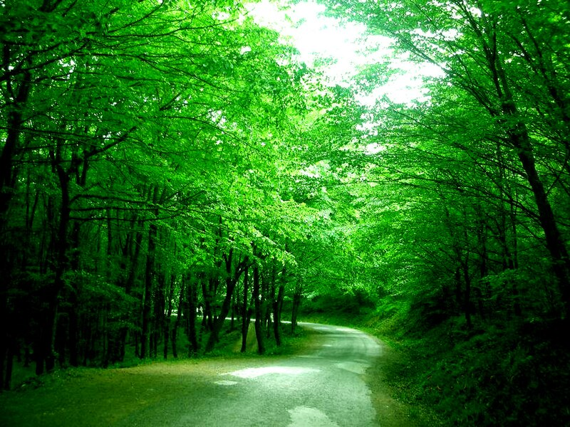
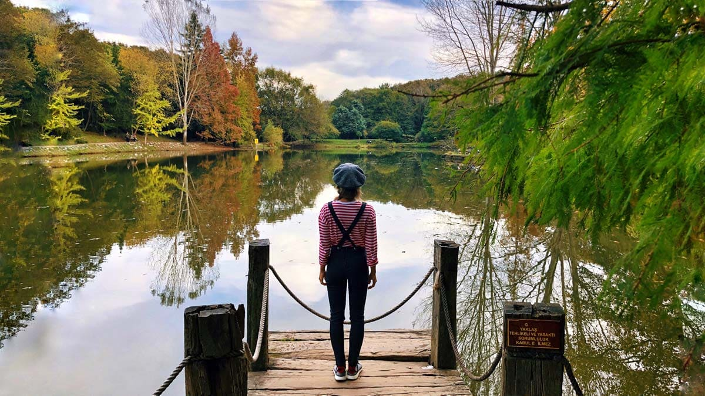
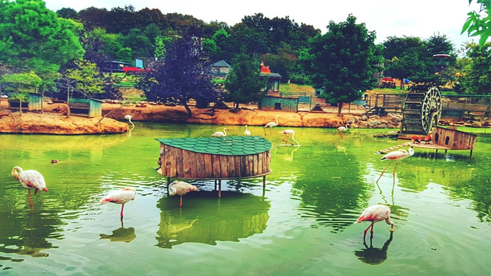
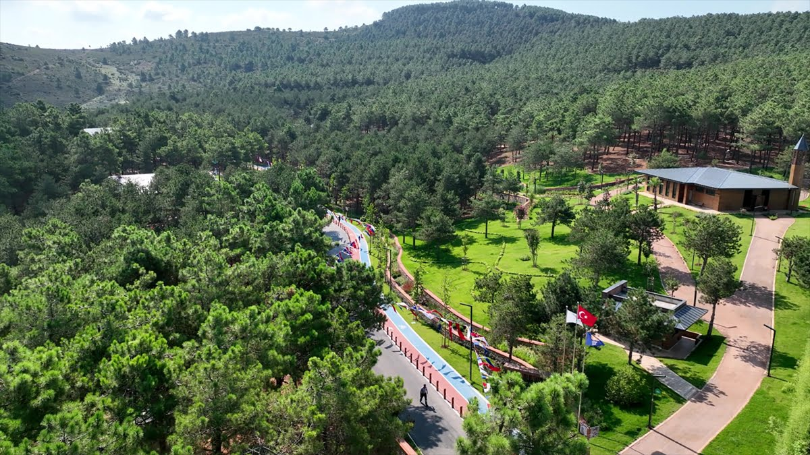
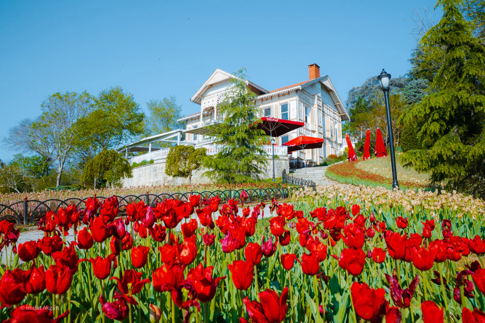

İstanbul'un en büyük ormanlık alanlarından biri olan Belgrad Ormanı, yürüyüş parkurları, bisiklet yolları ve piknik alanlarıyla doğaseverlerin gözdesidir.
Adres: Bahçeköy Merkez, 34473 Sarıyer/İstanbul
Açık Günler: Haftanın her günü
Giriş: Ücretli (Araçla giriş: 40 TL civarı)

Botanik meraklıları için eşsiz bir doğa cenneti olan arboretum, nadir bitkileri ve göletleriyle huzur dolu bir deneyim sunar. Sessizliği ile meşhurdur.
Adres: Bahçeköy Merkez, 34473 Sarıyer/İstanbul
Açık Günler: Pazartesi hariç her gün
Giriş: Ücretli (Tam: 30 TL – Öğrenci: 15 TL)

Yeşilin her tonunu barındıran bu park, hafta sonu kaçamakları için ideal. Doğa yürüyüşleri, kahvaltı mekanları ve kuş sesleriyle dolu bir atmosfer sunar.
Adres: Polonez, Beykoz/İstanbul
Açık Günler: Her gün
Giriş: Ücretsiz

Anadolu Yakası’nın saklı güzelliklerinden biri olan Aydos Ormanı, göleti ve temiz havasıyla doğa yürüyüşleri için idealdir. Kamp severler için de uygun alanlara sahiptir.
Adres: Kartal/Aydos, İstanbul
Açık Günler: Haftanın her günü
Giriş: Ücretsiz

Boğaz manzarasına karşı rengarenk lalelerle ünlü bu koru, bahar aylarında ziyaretçilerin ilgi odağı. Dinlenme alanları ve kafeleriyle keyifli vakit geçirilebilir.
Adres: Reşitpaşa, Emirgan Sk., 34467 Sarıyer/İstanbul
Açık Günler: Her gün
Giriş: Ücretsiz